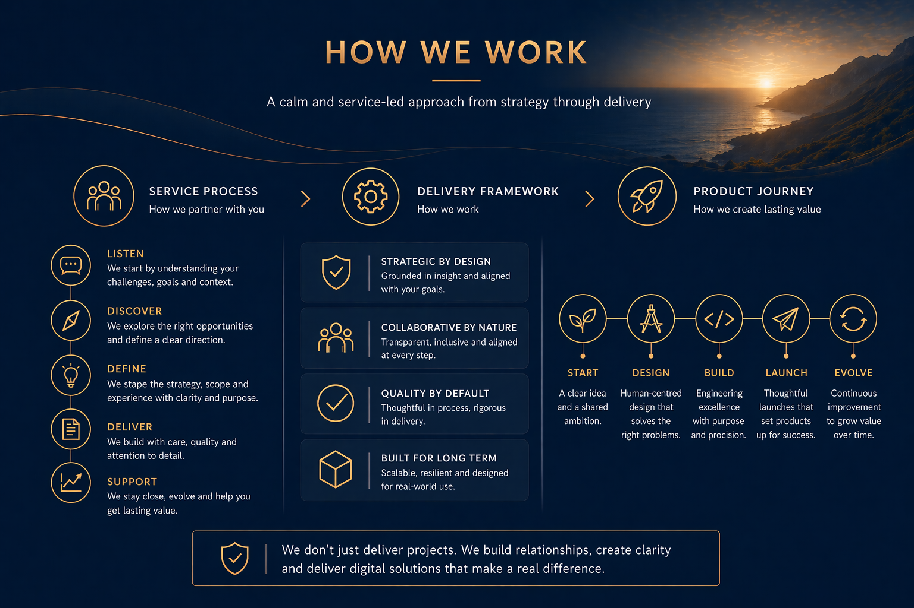

Cynevor Services
Practical digital products and platforms, designed with purpose
Cynevor works with businesses, organisations, and emerging ventures to design and build high-quality digital experiences that are useful, trusted, and built to last.
Cynevor Services
Cynevor works with businesses, organisations, and emerging ventures to design and build high-quality digital experiences that are useful, trusted, and built to last.
Overview
Cynevor provides bespoke digital design, website development, app design, platform strategy, and service-led product support for businesses and organisations looking to build with clarity, quality, and long-term value.
Our services are centred on clarity, functionality, and long-term value. Whether creating a bespoke website, designing an app, shaping a customer portal, or building a platform from the ground up, we focus on work that improves how people interact with products, services, and systems in the real world.
We approach every project with the same principles that guide the wider group: stewardship, fairness, service, opportunity, community, and trust.
What We Offer
Type of service categories to help you quickly find the right fit.
We design and build premium websites that combine strong visual identity with clarity, performance, and long-term usability. From company websites and landing pages to more complex digital platforms, our work is tailored to the needs of each organisation and the people it serves.
We create app concepts, interfaces, and digital product experiences built around practical needs and real-world use. Whether for consumers, internal teams, or service-led businesses, we focus on thoughtful design, intuitive journeys, and scalable foundations.
We design custom app experiences for creators and media-led brands who need a stronger direct relationship with their audience. This can include fan community features, premium content journeys, membership experiences, live interaction touchpoints, and commerce-ready flows that support long-term creator growth beyond third-party platforms.
We create consistent design systems, interface frameworks, and user experience foundations that help businesses build digital products with greater cohesion, quality, and scalability. This includes component systems, visual hierarchies, interaction patterns, and platform-wide experience consistency.
We design digital portals and platform experiences that improve visibility, communication, and trust. This includes customer dashboards, service tracking systems, booking or workflow interfaces, and connected digital experiences that make operations feel more transparent and easier to use.
Cynevor supports the design and development of subscription-based software products, internal systems, and digital tools. We work on the structure, interface, and user experience of platforms designed to support business growth, operational efficiency, and long-term customer value.
In line with Cynevor's wider mission around opportunity and education, we also support the design of digital learning environments, academy platforms, mentoring pathways, and skills-focused experiences that make education and development more accessible and practical.
We build digital tools and platforms for organisations, charities, and community-led initiatives that need clear, inclusive, and effective digital infrastructure. This may include membership experiences, information platforms, support portals, and digital services built around meaningful public or community benefit.
For early-stage ideas and new digital ventures, we help shape minimum viable products that are credible, functional, and launch-ready. The focus is on building the right foundations: enough to prove the concept, attract users, and support future development without unnecessary complexity.
Alongside hands-on design and build work, we help shape digital products and services strategically. This includes product planning, customer journey mapping, experience design, digital roadmaps, and practical thinking around how platforms and services should work in the real world.
Cynevor can also provide continued support as digital products evolve, helping organisations refine interfaces, improve journeys, expand functionality, and keep platforms aligned with long-term goals.
Who We Work With
We work with:
We partner best with teams looking for considered delivery, credible digital product design, and long-term stewardship rather than short-term digital noise.
How We Work
Cynevor's approach is shaped by the same principles that define the wider group.
We build carefully.
We design for clarity.
We focus on what is genuinely useful.
We think beyond launch and toward long-term value.
Our aim is not simply to make things look good. It is to create digital products, platforms, and experiences that work well, feel considered, and stand up to real use over time.

If you are exploring a new website, app, platform, or digital service, Cynevor can help shape and build the right solution with clarity, care, and long-term thinking.